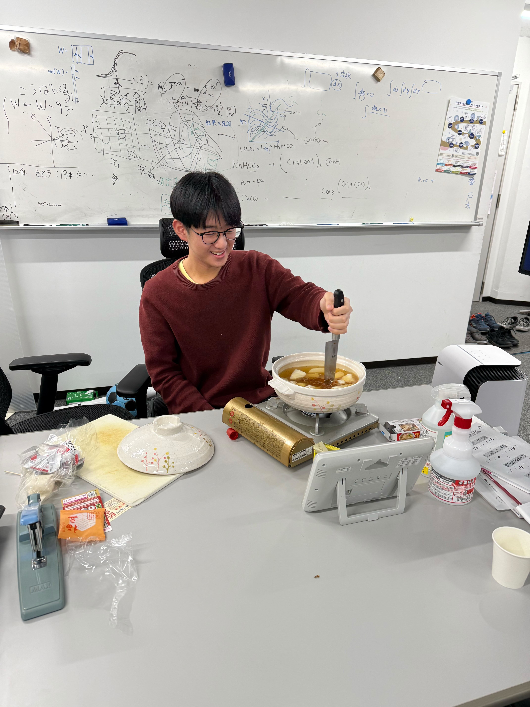

ニュース
- 7月の神経科学大会で口頭発表します。
- このWebサイトを公開しました。
- 博士課程に進学しました。学振特別研究員(DC1)に採用されました。
自己紹介

中牟田 旭 (Asahi Nakamuta)
京都大学大学院 情報学研究科 非線形物理学講座
@AsahiNakamuta
nakamuta.asahi.56z_at_st.kyoto-u.ac.jp
京都府京都市左京区
CVを見る
脳の研究をしています。